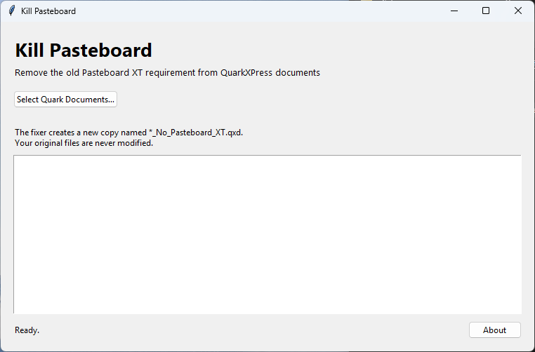

OPEN CIRCUIT • SOFTWARE & APPS
Kill Pasteboard
Free Windows utility that fixes QuarkXPress 4 documents that refuse to open because they require the old Pasteboard XT XTension. Creates a fixed copy without overwriting the original.

About Kill Pasteboard
Kill Pasteboard is a purpose-built Windows utility for QuarkXPress 4 documents that report a missing Pasteboard XT XTension requirement. It is designed for older QuarkXPress files that were created with a Mac Pasteboard XT dependency and then fail to open in QuarkXPress 4 for Windows.
The utility searches for the XQRQXTPB requirement marker and neutralizes that marker while leaving the rest of the document unchanged. It then creates a new copy named _No_Pasteboard_XT, so your original document is never overwritten.
Download the standalone Windows EXE directly from the Open Circuit RC & Tech GitHub release.
FEATURES
What it does
Pasteboard XT fix
Targets the old XQRQXTPB requirement marker used by affected QuarkXPress documents.
Original stays safe
Creates a new fixed document instead of overwriting the source file.
Batch-friendly
Select multiple QuarkXPress documents and process them in one run.
Standalone build
The included builder can create a windowed standalone EXE with PyInstaller.
Frequently asked questions
Does Kill Pasteboard overwrite the original?
No. The utility writes a new copy using the _No_Pasteboard_XT filename pattern, and creates a numbered copy if that name already exists.
What does it actually change?
It searches for the XQRQXTPB marker and replaces only the first four bytes of that marker, XQRQ, with XXXX. Other document bytes are left unchanged.
Where can I download it?
Use the Download Here button on this page to get the standalone Windows EXE from the Open Circuit RC & Tech GitHub release.
Is the original document safe?
Yes. Kill Pasteboard writes a new fixed copy and never overwrites the original document.